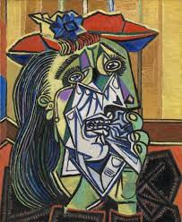

ART MOVERMENT
Lady with an Ermine
Leonardo da Vinci
The painting was purchased ca. 1800 in Italy, by Adam Jerzy, the son of Princess Izabela Czartoryska, and donated to the Museum in Puławy where it was exhibited in the ‘Gothic House’ from 1809–1830.

Weeping Woman
Pablo Picasso
The painting was purchased ca. 1800 in Italy, by Adam Jerzy, the son of Princess Izabela Czartoryska, and donated to the Museum in Puławy where it was exhibited in the ‘Gothic House’ from 1809–1830.

Lot
Andy Warhol
The painting was purchased ca. 1800 in Italy, by Adam Jerzy, the son of Princess Izabela Czartoryska, and donated to the Museum in Puławy where it was exhibited in the ‘Gothic House’ from 1809–1830.